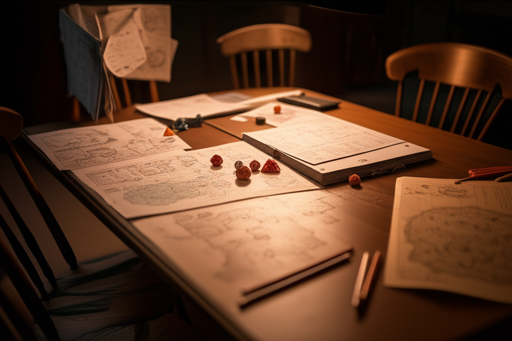

Interlude
Before the Napkin
Session Recording — October 7, 2026

Players
DM (Danielle)
Alan — Niven
Val — Sentinel
Meri — Taveth
Declan — Aldric
Whit — (absent)
DM
Whit texted. He's not coming.
Meri
Again?
DM
The Delgado case went sideways. Might be there all night.
Declan
That's the third session he's missed.
Val
Is he okay?
DM
He said "fine, just work." You know how he is.
Meri
It's not the same without everyone.
[Pause. Sound of dice being arranged.]
DM
I'll run Korvath as an NPC for combat. He's been... contemplating his patron's demands. Quiet tonight.
Alan
Aren't we all.
DM
[beat] Okay. Let's play.
Session Start
DM
Last session, you agreed to help the Circle of the Gentle Dawn gather the final components for the Shepherd summoning. Tonight, you're in the Circle's sacred grove. Elder Thessaly is directing preparations. The summoning circle has been drawn in silver and salt. Torches mark the cardinal points. The air smells like cedar smoke and anticipation.
Declan
Aldric examines the ritual preparations. Looking for anything... unusual.
DM
Roll Arcana.
[Dice roll]
Declan
Seventeen.
DM
The circle is standard thaumaturgic geometry. Well-constructed. The silver inlay is high quality. If there's anything wrong with the technical setup, you can't see it.
Val
Sentinel approaches the circle itself. I want to examine it.
DM
What are you looking for?
Val
I'm not sure. Something feels off. Can I roll Insight?
DM
[pause] On a summoning circle?
Val
On the situation. The whole thing.
DM
[longer pause] ...sure. Roll Insight.
[Dice roll]
Val
Natural eighteen, plus five. Twenty-three.
DM
[exhale] Okay. Sentinel stands at the edge of the circle. The geometry is correct. The components are pure. The Circle's intentions are genuine. But something about the design feels... patient. Not wrong. Patient. Like it's been waiting. Not for the ritual. For something else. The circle isn't calling something to you. It's opening a door that was already there.
[Silence at the table]
Val
(as Sentinel) We should stop.
Alan
What?
Val
(as Sentinel) Every summoning has a cost. We just don't know who pays yet.
Meri
(as Taveth) The ice remembers many summonings. Most were fine.
Alan
(as Niven) Define "fine."
[Laughter around the table, but Val isn't laughing]
8:47 PM — Niven's Hesitation
DM
One of the younger cultists approaches Niven. She's maybe seventeen, wearing the novice robes of the Circle. She looks nervous but determined.
DM
(as novice) "Excuse me. You're with the adventurers, aren't you? The ones helping with the summoning?"
Alan
(as Niven) That's one way to describe us.
DM
(as novice) "I wanted to ask... do you trust the Circle's intentions? I've been a novice for two years. Everything they've taught me says this is right. That the Shepherd will help us. But..." She trails off.
[Long pause]
DM
The novice waits. What does Niven say?
[Extended silence. Sound of Alan shifting in his chair.]
Alan
(as Niven) He doesn't know. He wants to trust them. He's just not sure trust is something he's good at.
[The table goes quiet. That wasn't entirely in character.]
Declan
[quietly, to Alan] You okay?
Alan
Yeah. Just tired. Keep going.
9:41 PM — After Combat
DM
The wolves are dead. The Circle's guards are cleaning up the bodies. Everyone catches their breath.
Declan
[out of character] We needed Whit tonight.
DM
I know. He'll be back next week.
Meri
Will he? The case sounded bad.
DM
He always comes back.
[A beat. Then they continue.]
10:15 PM — Session End
DM
The components are gathered. The circle is prepared. The Circle of the Gentle Dawn will perform the summoning next session. Elder Thessaly thanks you for your help. "Tomorrow, everything changes," she says. "Tomorrow, we bring the Shepherd home."
DM
That's where we'll pick up. Everyone's excited about the summoning, yes?
Val
[not answering directly] The geometry still bothers me.
DM
You're always overthinking it. That's why I love having you at the table.
Val
[pause] Yeah.
10:23 PM — Post-Session
[Recording continues. Most conversation indistinct. Then:]
DM
Alan. Hang back a second?
Alan
Yeah?
DM
You okay? You seemed distant tonight. Niven was making calls he wouldn't normally make.
Alan
I'm fine. Work stuff. Money stuff. The usual.
DM
If you need to talk—
Alan
I'm fine. I will be. Just need to figure some things out.
DM
Okay. But I'm here. If you need.
Alan
I know. Thanks.
[Sound of door closing]
[End of transcript]